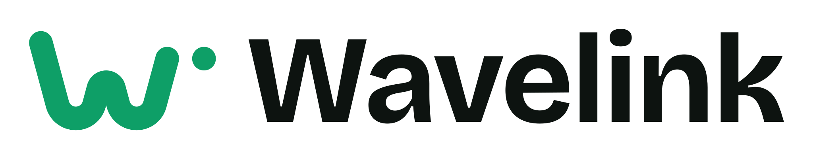
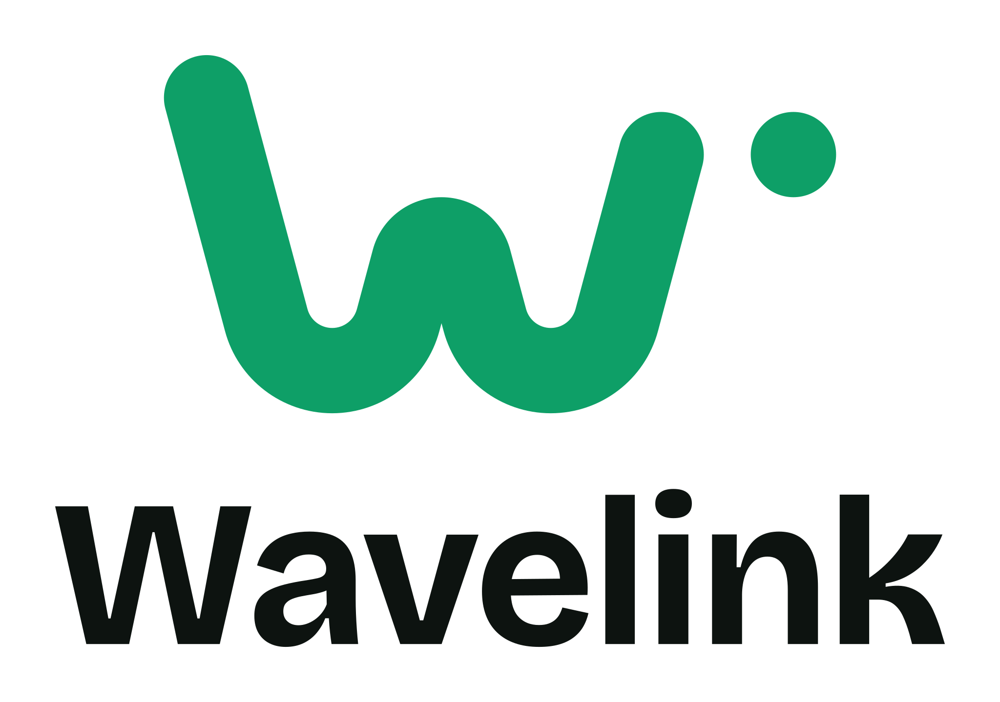
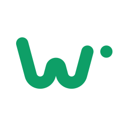
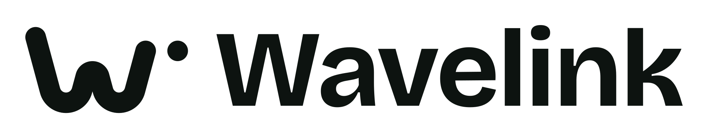

Logo guidelines
The Wavelink mark is one continuous wave that draws a W. The dot beside it is the message it carries across to ChatGPT and Claude. These are the rules for using it.
The logo
Use the horizontal lockup by default. Use the stacked lockup in square or tall spaces, and the symbol alone only where the name already appears nearby, or where space is tight (favicons, app icons, avatars).


Colour
Wavelink Green is the mark's colour on light backgrounds. Signal Green is a lighter green that takes its place on dark backgrounds. Ink is for the wordmark and all text. The Pantone values are the nearest matches; check them against a physical swatch book before printing.
- HEX
- #0E9F67
- RGB
- 14 159 103
- CMYK
- 91 0 35 38
- Pantone
- ≈ 340 C
- Use
- Mark on white and light grounds
- HEX
- #14B874
- RGB
- 20 184 116
- CMYK
- 89 0 37 28
- Pantone
- ≈ 7480 C
- Use
- Mark on Ink and dark grounds
- HEX
- #0D1310
- RGB
- 13 19 16
- CMYK
- 32 0 16 93
- Pantone
- ≈ Black 6 C
- Use
- Wordmark, text, dark grounds
Contrast: Green on white is 3.4:1, enough for a graphic mark but not for body text. Signal on Ink is 7.3:1. Don't set small text in either green.
Backgrounds



On photos, use the all-white or one-colour Ink version, on a calm area of the image with enough contrast.
Clear space
Keep a margin of at least X on every side, where X is the height of the dot. For the symbol alone, use 2X. Nothing (text, edges, other logos) goes inside that area.
Minimum sizes
| Version | Screen | |
|---|---|---|
| Horizontal lockup | 96 px wide | 25 mm wide |
| Stacked lockup | 64 px wide | 18 mm wide |
| Symbol | 24 px; below 32 px use the small cut | 6 mm |
Small cut (wavelink-symbol-small.svg) | 16 px (favicons) | 4 mm |
Don't
Also don't: add shadows, glows or outlines; retype the wordmark in another font; drop the dot; or put the mark inside a speech bubble or phone shape. Wavelink is not WhatsApp, and the mark must never look like WhatsApp's or Meta's branding.
Files
| Folder | What's in it |
|---|---|
final/ | Master SVGs: symbol (green, ink, reversed, small cut), wordmark, horizontal and stacked lockups in every colourway, app icon |
export/symbol/ | Web icon set: favicon.ico, favicon.svg, 16/32/48 px PNGs, apple-touch-icon.png, 192/512 and maskable icons, site.webmanifest, and head-snippet.html to paste into a page's <head> |
export/horizontal/ | Black, white and green one-colour lockups, as SVG and 1200 px PNG |
export/png/ | 1200 px PNGs of the full-colour lockups and app icon |
board/ | Presentation board (HTML) and slide PNGs with README, terminal, app icon, website, browser tab and sticker mockups |
build.py | Rebuilds every master from the geometry; the wordmark is Bricolage Grotesque Bold (SIL Open Font License), converted to outlines |